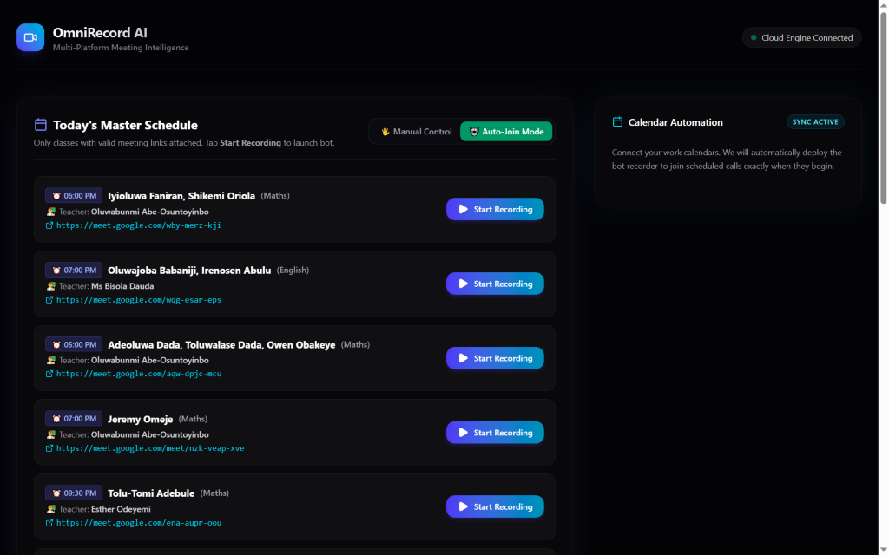
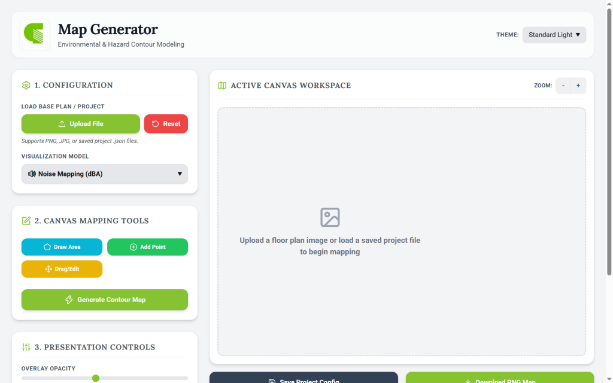

4 Real-World Shipped Projects
Click any project to open its full case study—including the problem, live screenshot, system architecture, and prompting workflow.

Flagship • Automation & Web Portal
Automated Class & Meeting Recorder
Built and pushed live so an online instructor can automatically record and archive every class at ₦0 recurring SaaS cost.
Next.js 16
Playwright Bot
Google APIs
Cloudflare Tunnel
Read Case Study →

Production • 165 Certificates Issued
IOHA Certificates Platform
Full-stack certificate generation and QR-verification app on Vercel—already used to issue 165 certificates across 5 webinars.
Next.js 16
Prisma
Aiven PostgreSQL
pdf-lib + QRCode
Read Case Study →

EdTech • Live Teaching Tool
PAS Board — Real-Time Tutor Whiteboard
Collaborative digital whiteboard with PDF annotation, WebSocket sync, and peer-to-peer support built for live online teaching.
React 18
TypeScript
WebSockets
Docker
Read Case Study →

Enterprise • Data Visualization
Gradi Noise Map Generator (gradihs.org)
Proprietary web tool turning raw field sound measurements into spatial gradient contour maps—showcased to Chevron HSE leadership.
Spatial Mapping
Web App
gradihs.org
Read Case Study →